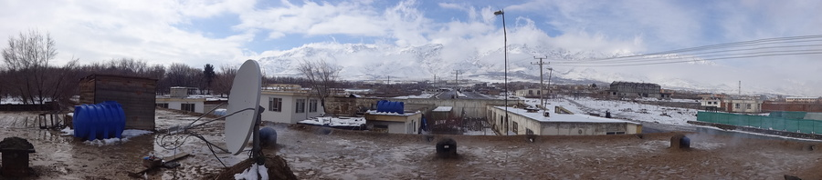
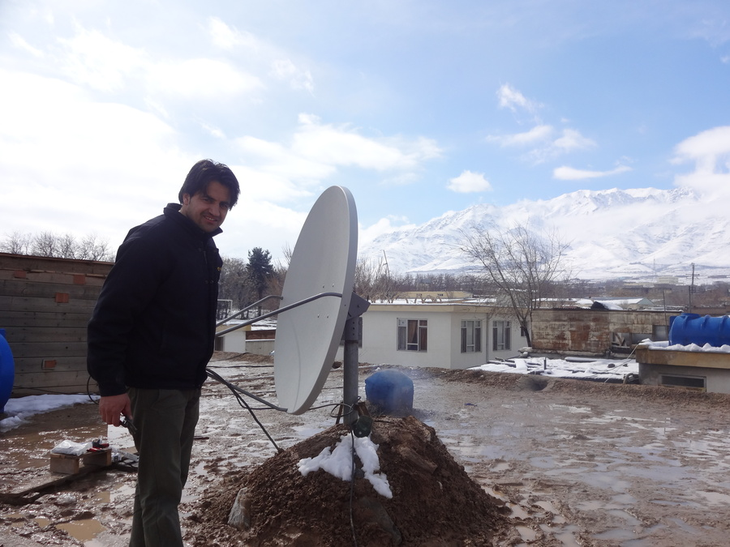
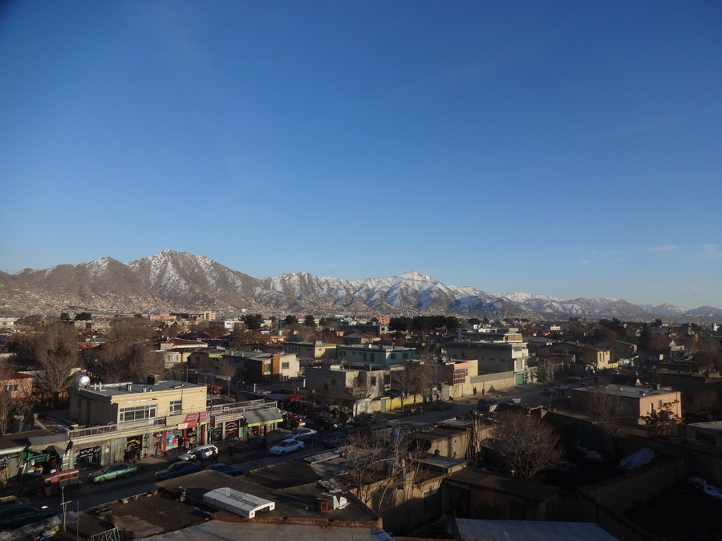
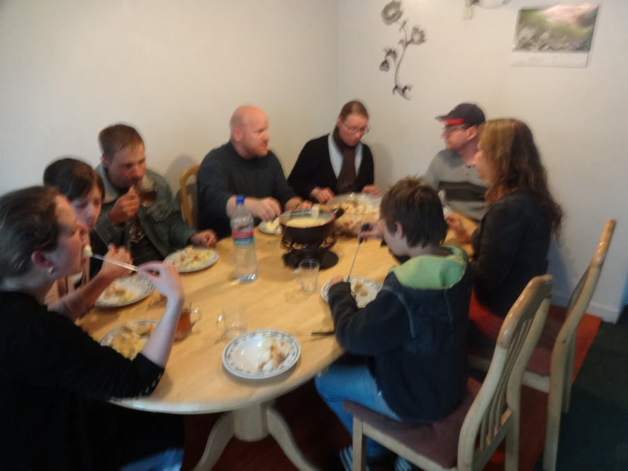

Charikar & Früehligsstart
geschrieben am Friday, March 8, 2013
Charikar
So langsam fangi a di würkli schöne Sitä vo Kabul zgseh. Ich bi miteme Mitarbeiter ufe Sateliteschüssle-Installation gange:
Dächer bestönd öfters mol us Dreck (und hebed übrigens erstunlich guet). Aber um druf umäzlaufe ischs gar nid schön. Drum han ich mich vornehm zrugghalte und nüt gmacht :-) Ich ha jo eh kei Ahnig ka und min Kolleg hed das sehr schnell erlediget ka.
Die Installatione sind eigentlich so dHauptarbet vo dä Agstellte do. Die Agstellte werded systematisch nozoge. Die meiste händ mol i dä Organisation unä agfange (Huusabwart) und sind mittlerwile Techniker. Das isch eigentlich recht cool, wil inä so würkli ä Chance gäh wird au langfristig chönne Afghanistan positiv zbeiflusse.
Zrugg in Kabul
Kabul gseht würkli super us zur Ziit. Isch eifach schön do zsi. Vor allem au wils mittlerwile so 5-10° warm isch i dä Nacht und am Tag ischs gnueg warm zum gmüetlich dusse hocke und Gitarre spiele. Das hanged wesentlich dämit zämä, das mir sitere Wuche kei Wolke meh händ am Himmel. Nebel gits notürli au kei :-)
Ich ha denn au endlich mol no chönne uf üses Dach ufästiege:
Ich han usägfunde, dass Kabul dur 1 Stromleitig versorgt wird. Naja wenigstens wundere ich mich jetzt nüme wieso dä Strom so oft usfallt. Kabul isch ä 5 Millionestadt. Stelled eu vor dSchwiz wür dur ei Leitig (= 1 Strommaste) versorgt werde.
Kabul und Umgäbig wär glaub au wunderschön zum Schifahre. Aber solang d'Sicherheit nid besser wird, sind Investitione eifach ä froglichi Sach.
Schwizer...
... heds in Kabul so einigi :-) Das isch super, wil Schwizer eifach wesentlich cooler sind wie alli Amerikaner, Kanadier und was äs sus no so git, zämä! :-) Darum hämmer notürli au äs schöns Fondue Ässä gmacht (sorry fürs verschwumne Bild, ha leider kei anders):
